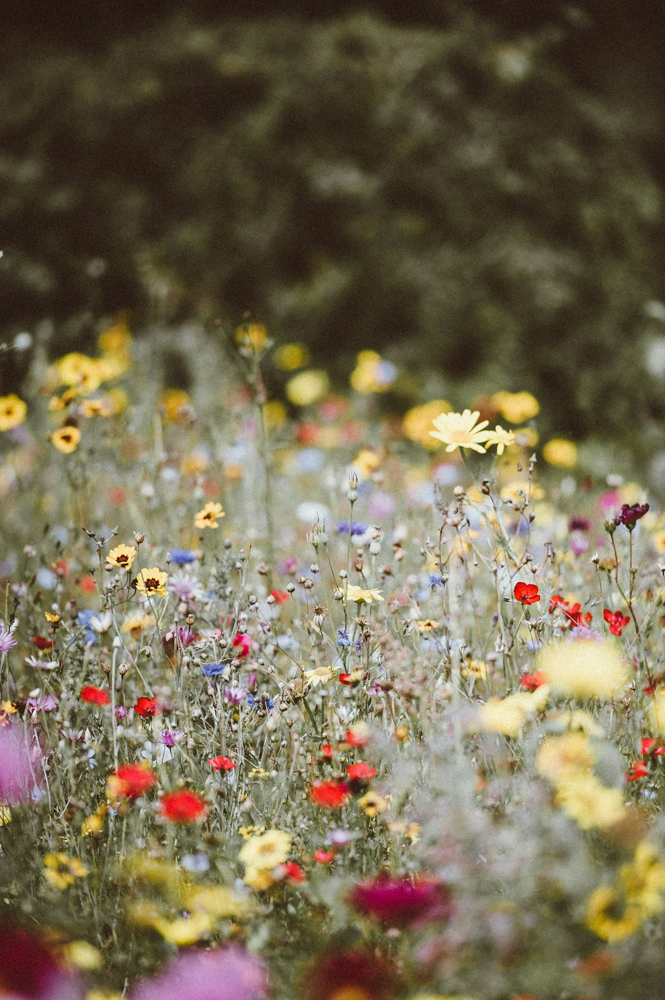
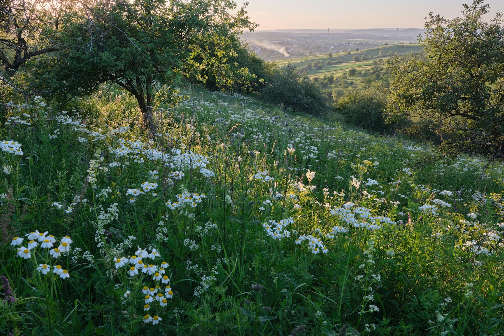
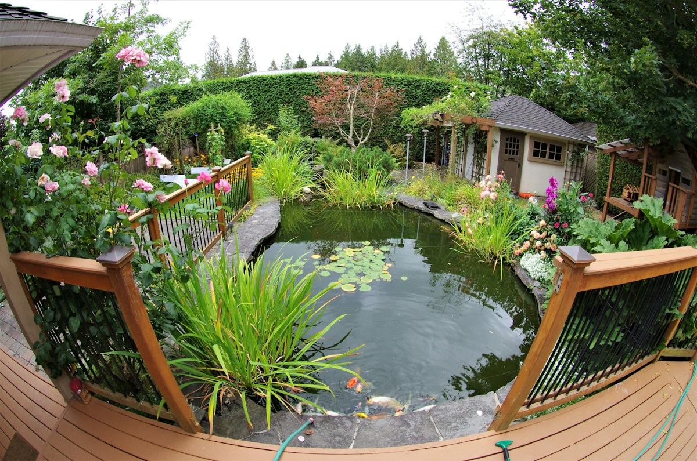
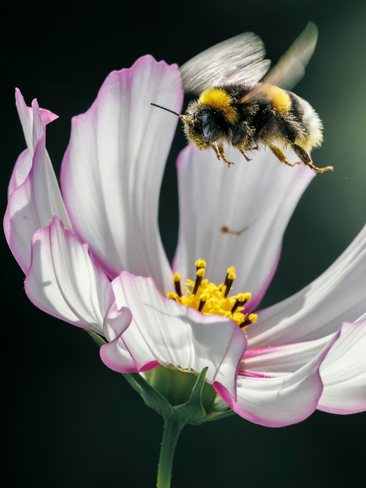
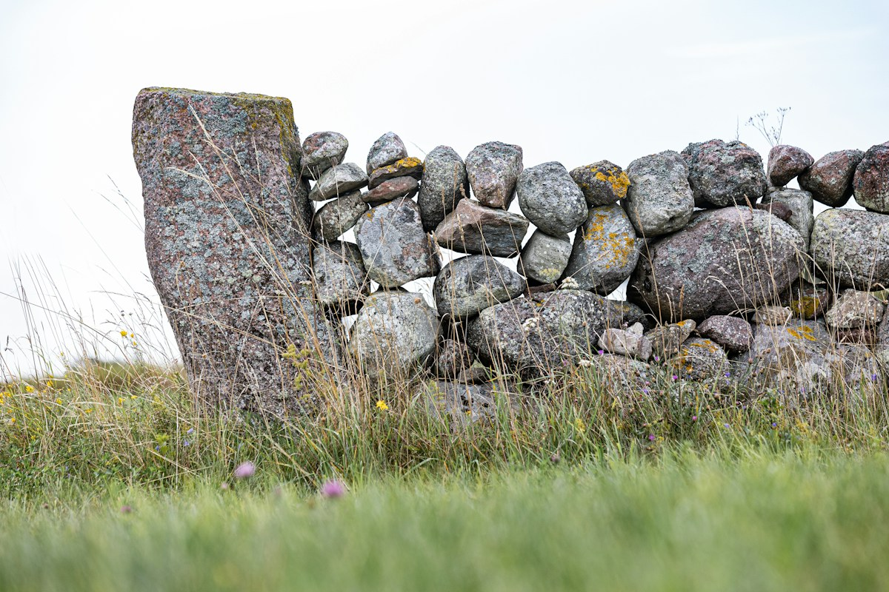

Wildblumenwiesen
Statt Rasen eine Wiese voller Blüten. Sie braucht wenig Wasser und keinen Dünger.
Naturgärten in Uster
Naturgarden gestaltet und pflegt Gärten mit einheimischen Pflanzen. Mit Blüten für die Bienen und Platz für Igel, Vögel und Falter.

Leistungen
Ein Naturgarten wächst mit der Zeit. Wir helfen beim Anlegen und beim Pflegen.

Statt Rasen eine Wiese voller Blüten. Sie braucht wenig Wasser und keinen Dünger.
Wir schauen Boden, Licht und Platz an. Dann entsteht ein Garten, der zu Ihnen passt.
Einheimische Sträucher geben Nahrung und Schutz. Und sie sehen das ganze Jahr schön aus.

Schon ein kleiner Teich lockt Libellen, Frösche und Vögel an.
Steinhaufen und Mauern bieten Unterschlupf für Eidechsen und Insekten.
Wir pflegen Ihren Garten so, dass er wild und doch gepflegt bleibt.
Naturnah und vielfältig
Ein naturnaher Garten ist kein Wildwuchs. Er ist geplant. Nur mit Pflanzen, die hierher gehören.
Einheimische Blumen, Sträucher und Bäume sind Futter für viele Tiere. So kommen Wildbienen, Schmetterlinge und Vögel von selbst.


Ein guter Garten braucht Zeit. Und Raum für alles, was darin leben will.
Kontakt
Rufen Sie an oder schreiben Sie eine E-Mail. Wir melden uns bei Ihnen.